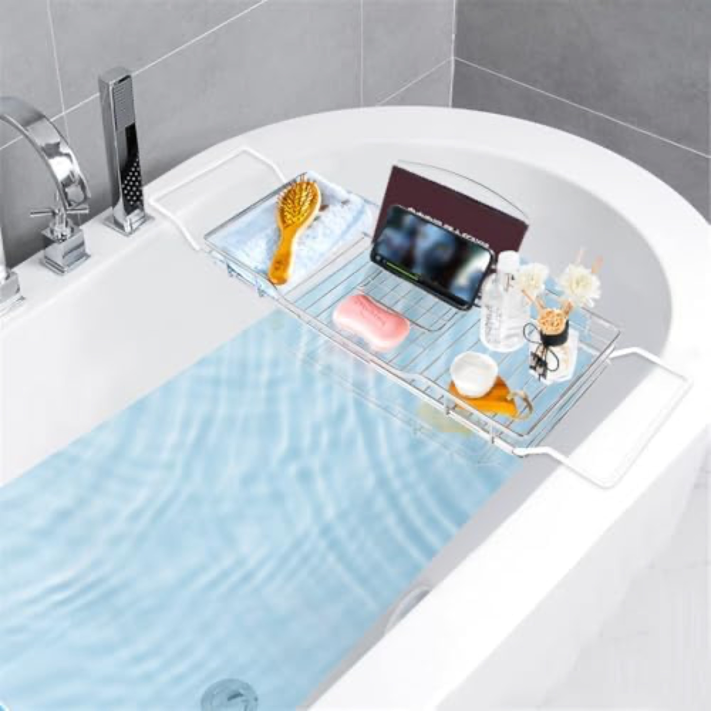
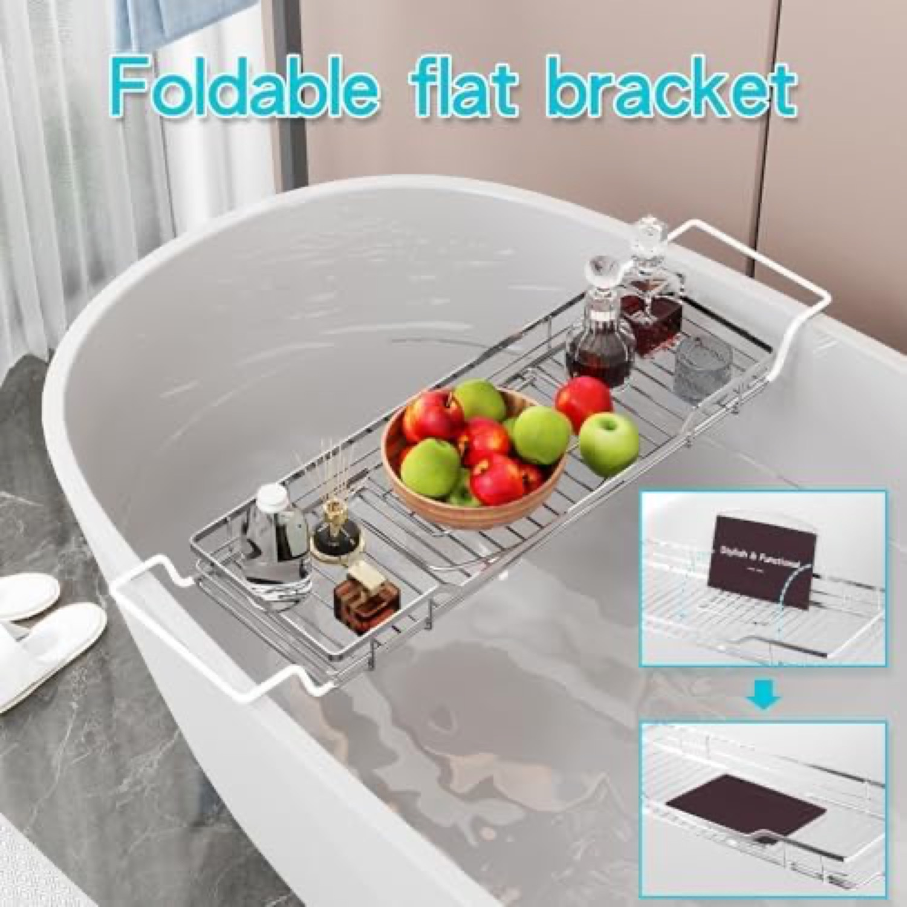
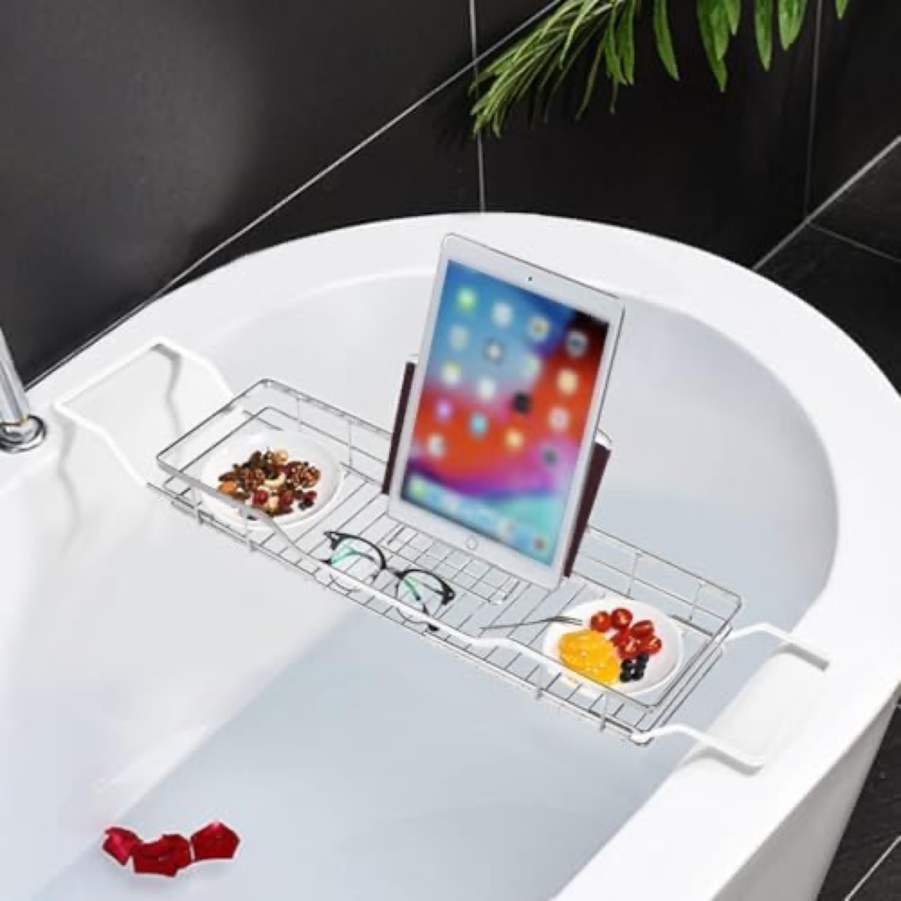
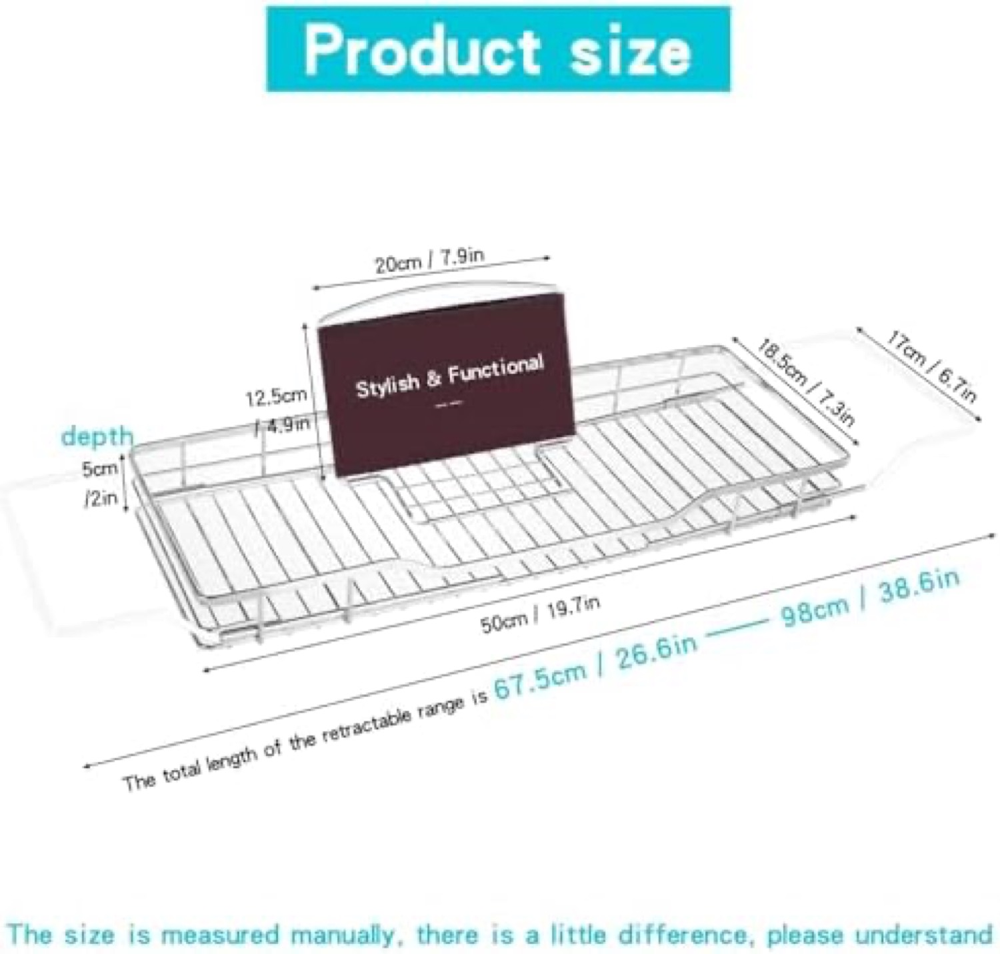
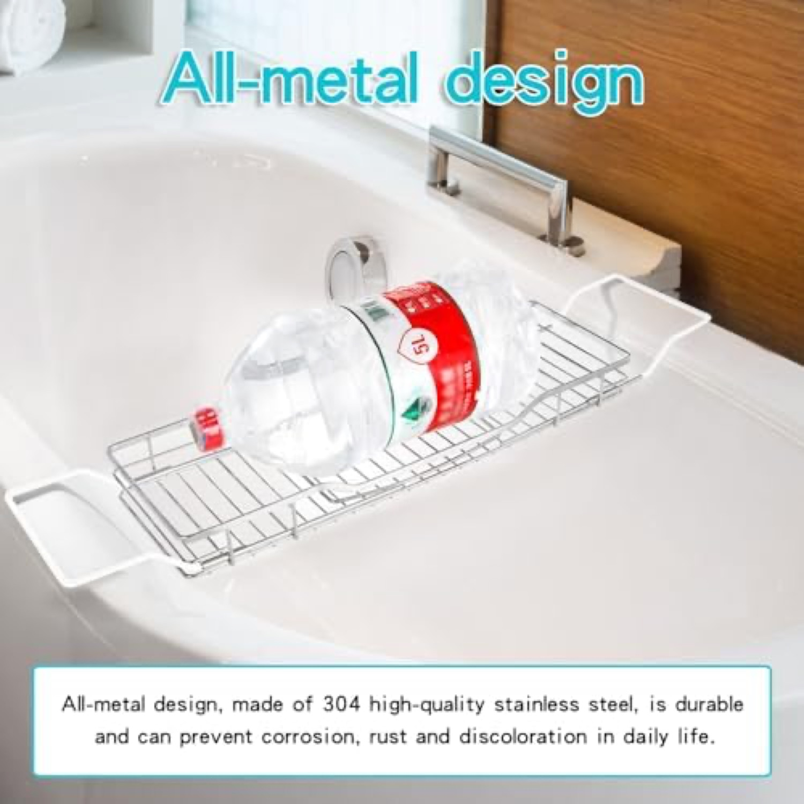

¥3,980
Buy Box
4.5★
59 reviewsレビュー
#118,086
Sales Rank販売ランク
~11/mo
sales (Keepa)月販売（Keepa）
防カビ防カビ
304 steel
¥624
FBA Pick&Pack
YQh markets "304 stainless, breathable, mildew-free" right in the title and earns 4.5★. It proves solving mold works. Yet a cold metal grid sells slowly (#118,086). The unmet combination is mold-proof AND warm wood.YQhはタイトルで「304ステンレス・通気・防カビ」を訴え4.5★。カビ解決が効くことを証明。だが無機質な金属グリッドは低速（#118,086）。満たされていない組合せは「防カビ × 温かい木」。





Verdict: a clear claim, a cold product. Six images and a Brand Store, with "防カビ / mildew-free" stated explicitly. No video, and the open metal grid reads utilitarian, not relaxing.評価：訴求は明確、製品は無機質。画像6とBrand Store、「防カビ」を明記。動画なし、開いた金属グリッドはくつろぎではなく実用的に見える。
It owns the mold-free claim but on a product nobody finds beautiful. High rating, low desire.防カビ訴求を持つが、誰も美しいと思わない製品。高評価・低欲求。
YQh puts "mildew-free / 防カビ" directly in its title and Brand Store, capturing the "カビない" search intent that no bamboo competitor claims.YQhは「防カビ」を題名とBrand Storeに直接置き、竹競合が誰も獲らない「カビない」検索意図を捕える。
Only steel/acrylic claim mold-resistance. We become the only bamboo that credibly claims it, contesting the same intent with a far more desirable product.防カビを謳うのはステン/アクリルのみ。我々は唯一根拠を持って謳う竹となり、遥かに魅力的な製品で同じ意図を取りに行く。
High rating, low velocity (#118,086, ~11/mo): mold-resistance alone is not enough, the material people want is warm wood.高評価・低速（#118,086、月約11）：防カビだけでは足りず、人が欲しいのは温かい木。
Source: Keepa PRO, 2026-06-18.出典：Keepa PRO 2026-06-18。
Only ~10% in 1-3★ · cleanest of all ten. Steel + mildew-free genuinely satisfies the few who buy it.1〜3★は約10%のみ。10商品で最も良い。スチール＋防カビは、買う数少ない人を確かに満足させる。
The best rating in the set, yet near-bottom velocity. Satisfaction is not the bottleneck for steel, desire is. Buyers who choose it are happy; most buyers never choose it.セット最高評価なのに最下位級の速度。スチールのボトルネックは満足度ではなく欲求。選ぶ人は満足、多くは選ばない。